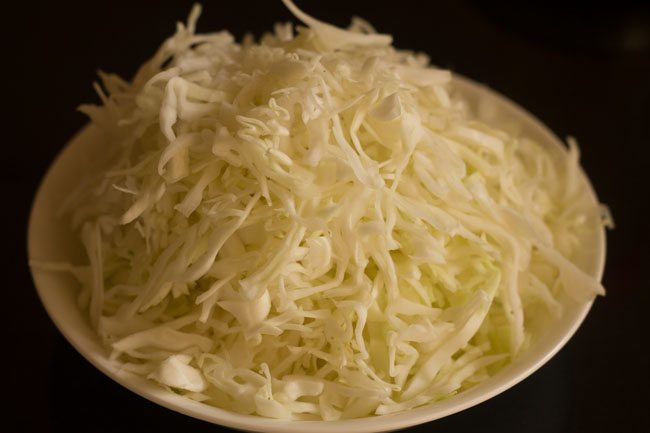
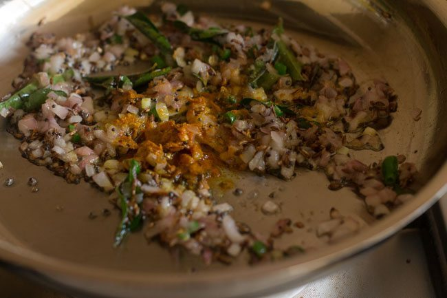
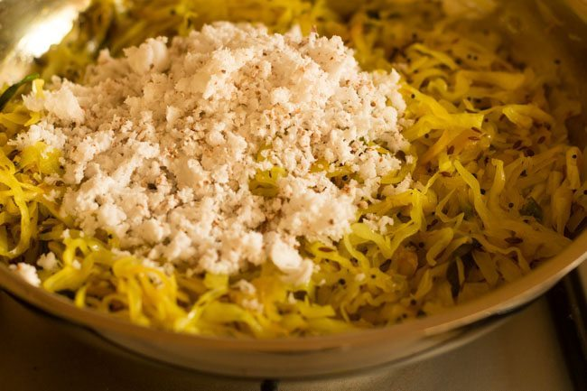

1. Rinse 1 medium size cabbage. Remove the outer leaves. Half or quarter the cabbage. Shred or grate in a food processor. You can also slice the cabbage thinly.

2. Heat 2 tablespoons coconut oil in a pan or kadai.
3. First, add 1 teaspoon mustard seeds and sauté on a low heat till they crackle.
4. Now, add 1 teaspoon cumin seeds and sauté them till they change color
5. Add ⅓ cup sliced pearl onions or ⅓ cup chopped shallots or ⅓ cup finely chopped onions.

6. Sauté the onions till translucent. Stir at regular intervals.
7. Add 1 green chili (chopped) and 10 to 12 curry leaves. Sauté for a minute.
8. Now, add ½ teaspoon turmeric powder and 1 pinch of asafoetida (hing). Mix very well. Note that you can skip the turmeric powder and asafoetida. Adding about ½ teaspoon of cumin powder also works in this recipe. But if adding cumin powder, skip adding cumin seeds.
9. Add the shredded cabbage and salt as required.
10. Mix very well and sauté for a minute.
11. Cover the pan with a tight lid and cook the cabbage on low heat or sim.
12. Keep checking after every 4 to 5 minutes and give a stir. TIP 1: If the cabbage starts sticking to the bottom of the pan, sprinkle some water all over. Cover with a tight lid and cook again. Make sure that the cabbage does not get browned or burnt. TIP 2: If your pan is light and not heavy, it can brown the cabbage fast. So add about ¼ to ⅓ cup water. Mix well and cover the pan to cook the cabbage

13. On low heat, cook till the cabbage is tender. If there is any moisture in the pan, then cook further till all the moisture or water dries up.
14. Once the cabbage is tender and cooked perfectly, add ½ cup fresh grated coconut. You could also use frozen coconut. But thaw the coconut before adding
15. Stir and cook for 1 to 2 minutes more on a low heat.
16. You can garnish cabbage thoran with chopped coriander leaves if you like.
17. Serve the cabbage thoran hot with some steamed rice, roti or paratha. You can also have it with bread or pack it in lunch box.